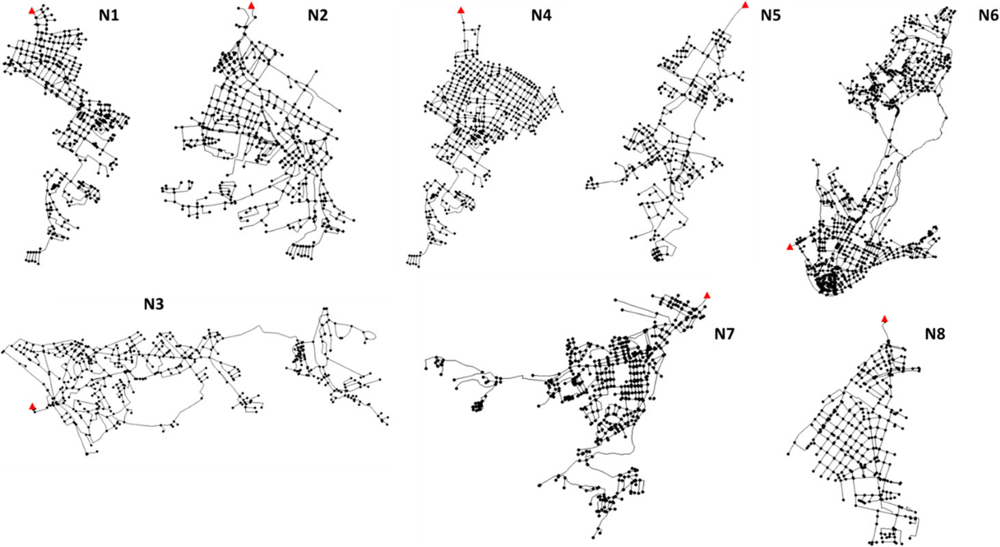

Centrality and shortest path length measures for the functional analysis of urban drainage networks
[doi] urban-drainage-networkscomplex-networksgraph-theorysewer-systemsnetwork-topologyhydrodynamic-modeling
Centrality and shortest path length measures for the functional analysis of urban drainage networks
Authors: Julian D. Reyes-Silva, Jonatan Zischg, Christopher Klinkhamer, P. Suresh C. Rao, Robert Sitzenfrei, Peter Krebs Year: 2020 Tags: urban-drainage-networks, graph-theory, shortest-paths, edge-betweenness-centrality, travel-time-distribution, sewer-networks
TL;DR
Tests whether two graph-theoretic measures — Single Destination Shortest Paths (SDSP) weighted by residence time, and Paths (all-to-one SDSP edge counts) — can replace full hydrodynamic simulation for characterizing transport and flow-collection functions of urban drainage networks. Across 8 Dresden sewer subnetworks, SDSP with residence-time weighting partially reproduces normalized travel time distributions, and Paths correlates with dry-weather flows at an average Pearson r ≈ 0.91, using only structural pipe data (length, diameter, slope).
First pass — the five C's
Category. Empirical analysis of real systems; research prototype applying complex network methods to urban water infrastructure.
Context. Urban drainage network (UDN) graph analysis; builds on Seo & Schmidt (2014) — Width Function as TTD proxy in urban drainage; Kaeseberg et al. (2018) — SWMM tracer-based TTD derivation for Dresden networks; Girvan & Newman (2002) — Edge Betweenness Centrality (EBC); Yang et al. (2017) — functional topology of evolving UDNs.
Correctness. Three load-bearing assumptions: (1) UDNs are Directed Acyclic Graphs — approximately valid for gravity-driven systems but breaks under surcharge or backwater; (2) Manning full-pipe velocity approximation (V ∝ D^(2/3) × S^(1/2)) represents actual flow velocity — ignores partial-fill conditions typical of dry weather, systematically overestimating velocity; (3) wastewater flow behaves analogously to information routing in networks — physically motivated but unproven for distributed-inflow systems.
Contributions. - Demonstrates that SDSP weighted by residence time (W6) produces normalized cumulative distributions statistically indistinguishable from TTDs (KS test, α = 0.01) in 3 of 8 networks. - Shows Paths (all-to-one SDSP count) correlates with average dry-weather edge flows at mean Pearson r ≈ 0.91, outperforming EBC and without requiring any edge-weight information. - Identifies a structural explanation for EBC's failure near the outlet: network destinations located topologically off-center produce a non-monotonic (hysteretic) EBC–flow relationship. - Establishes that slope + diameter + length constitute the minimum structural data requirement for transport function analysis via graph metrics.
Clarity. Generally well-structured with candid acknowledgment of limitations; the results and conclusions sections are repetitive, and the velocity-approximation derivation is compressed to the point of ambiguity.
Second pass — content
Main thrust: Weighted graph metrics computed from structural pipe data alone can approximate travel time distributions (via SDSP) and flow accumulation patterns (via Paths) in urban drainage networks, reducing dependence on calibrated hydrodynamic models for functional analysis.
Supporting evidence: - SDSP-W6 (residence-time weighting) passes KS test (α = 0.01) for normalized TTD similarity in N2, N5, N8; W5 (friction losses) adds N2, N5; W1 (length) only passes for N1; W3 (1/slope) and W7 (unweighted) fail for all networks. - SDSP-W6 mean values are lower than TTD means for 6 of 8 networks (implying faster predicted transport), but 3.3× higher for N3 and 1.6× higher for N7; SDSP standard deviations exceed TTD standard deviations in all 8 networks for all weights. - EBC–Qdw Pearson r > 0.7 for 7 of 8 networks (all weights), but < 0.61 for N5; hysteretic behavior (EBC decreases as flow increases near the outlet) renders EBC unreliable as a flow magnitude predictor. - Paths–Qdw Pearson r > 0.8 for all 8 networks (all weights), average ≈ 0.91; branched networks (e.g., N3, Meshness 16.88%) yield a single linear relationship; meshed networks (e.g., N4, Meshness 45.47%) yield multiple linear relationships. - Edge weighting factor has negligible influence on EBC and Paths correlation results, indicating that connectivity structure alone drives collection analysis.
Figures & tables: - Table 1: Physical characteristics of 8 networks (nodes, edges, area km², sewer length km, Qdw L/s, mean slope %, Meshness %); well-labeled with units. - Fig. 1: Layout maps of 8 networks; outlets marked; qualitative only, no scale bars visible per network. - Fig. 2: Large multi-panel cumulative frequency comparison (7 weights × 8 networks); axes labeled "Norm SDSP/TTD" (0–1 range); no confidence intervals or error bands; visual crowding makes individual comparisons difficult. - Fig. 3: Bar chart of mean and standard deviation for SDSP-W6 vs. TTD across 8 networks; no error bars; units implied (seconds) but not stated on axis. - Fig. 4: Scatter plots of EBC-RT vs. Qdwn per network; hysteresis clearly visible; no regression lines or significance annotations. - Fig. 5: Scatter plots of Paths vs. Qdwn per network; linear trend evident; no regression lines, no error bars, no r² shown in figure (reported in supplementary). - Overall: KS test significance is reported (α = 0.01), but Pearson r values for the collection analysis are relegated to supplementary data with no p-values or CIs shown in main text.
Follow-up references: - Kaeseberg et al. (2018) — SWMM tracer methodology underpinning all TTD validation here; essential for understanding the reference data. - Seo & Schmidt (2014) — Width Function as TTD analog; the conceptual precursor this paper extends to geodesic distances. - Yang et al. (2017) — functional topology of evolving UDNs; closest directly related framing. - Meijer et al. (2018) — graph-theory identification of critical sewer elements; complementary application context.
Third pass — critique
Implicit assumptions: - Full-pipe Manning velocity (W4 ∝ D^(2/3) × S^(1/2)) assumed for dry-weather conditions where actual fill ratios are well below 100%; this systematically overestimates velocity and directly explains why SDSP-W6 standard deviations always exceed TTD standard deviations — a structural bias, not a calibration issue. If violated (i.e., if partial-fill correction is applied), key transport results may shift materially. - Spatially uniform inflow distribution across nodes is implicit; the paper mentions spatial heterogeneity as a future concern but does not assess its impact on any result. - Single fixed outlet per subnetwork; method is undefined for networks with multiple outfalls or intermediate pumping stations. - Pearson correlation assumed appropriate for the EBC/Paths–flow relationships despite the clearly non-linear (hysteretic or multi-branch) patterns visible in Figs. 4 and 5.
Missing context or citations: - No quantitative comparison against Horton-Strahler ordering, which is explicitly named as the status-quo alternative for flow-path identification but then dismissed without head-to-head metrics. - Width Function literature (e.g., Rodriguez-Iturbe & Rinaldo, Fractal River Basins) is the direct conceptual ancestor of the TTD-via-path-distribution approach and is not cited. - No comparison against simpler topological proxies such as upstream pipe count or upstream contributing length, which would establish a proper performance baseline. - Literature on hydraulic skeletonization of sewer networks (relevant to data reduction) is not engaged.
Possible experimental / analytical issues: - Only 8 subnetworks from a single city (Dresden, Germany) — all continental European, gravity-fed, separate/combined systems with Meshness 17–45%; generalizability to flat coastal cities, combined systems with pumps, or highly meshed networks is asserted but undemonstrated. - KS test success rate is 3 of 8 networks for the best-performing weight (W6); framing this as validating the approach requires acknowledging that the method fails statistically for the majority of cases. - Pearson r values (~0.91) reported without p-values, confidence intervals, or assessment of whether the Pearson assumptions (linearity, approximate normality of residuals) hold given the multi-branch scatter visible in Fig. 5. - Hydrodynamic model calibration uncertainty is unquantified; the "ground truth" TTDs and Qdw values carry model error that is not propagated to the comparison results. - SDSP-W6 standard deviations exceed TTD standard deviations for all 8 networks regardless of weight — a systematic, not random, deviation that the paper attributes post-hoc to full-pipe velocity assumption without testing this explanation. - Data are not publicly available due to security concerns, precluding independent reproduction.
Ideas for future work: - Apply a partial-fill velocity correction (e.g., multiply Manning velocity by a fill-ratio factor derived from average dry-weather Qdw and pipe geometry) and test whether the systematic variance overestimation and KS test failure rate in SDSP-W6 are resolved. - Generate synthetic UDN ensembles spanning Meshness 0–100% (using existing stochastic generators, e.g., Möderl et al. 2009) to isolate and quantify the layout effect on EBC vs. Paths performance under controlled conditions. - Incorporate node-level inflow weights (proportional to contributing area or population density) into the Paths calculation to test whether weighted Paths resolves the multi-linear behavior in meshed networks. - Test SDSP-W6 against wet-weather TTDs from the same calibrated SWMM models to directly evaluate the paper's hypothesis that SDSP-W6 better represents high-flow travel times than dry-weather ones.
Figures from the paper

Methods
- Single Destination Shortest Paths (SDSP) via Dijkstra's algorithm
- Edge Betweenness Centrality (EBC)
- two-sample Kolmogorov-Smirnov test
- Pearson correlation coefficient
- EPA Storm Water Management Model (SWMM) hydrodynamic simulation
- directed acyclic graph (DAG) representation
- edge weighting with structural and hydraulic pipe properties
- travel time distribution (TTD) analysis
Datasets
- Dresden sewer network (8 subnetworks)
Claims
- Residence Time (W6) as an edge weighting factor allows Single Destination Shortest Path distributions to approximate travel time distributions in urban drainage networks.
- Edge Betweenness Centrality shows hysteretic behavior relative to flow and is inadequate for estimating flows near the network outlet, but useful for identifying flow paths in meshed systems.
- The number of Single Destination Shortest Paths through an edge (Paths approach) correlates strongly with average dry-weather flows, with correlation coefficients above 0.8 for all networks.
- No structural edge weighting is required for the collection function analysis using either EBC or the Paths approach.
- Graph-theory-based approaches relying only on structural data can serve as surrogates for complex hydrodynamic analysis of urban drainage network functions.